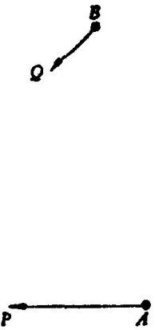

(3)例。已知两船的速度及其在某一时刻的位置；两船各以匀速沿直线航
道行驶。求当两船相距最近时，彼此之间的距离。看成质点。
已知数是什么?移动物体的初始位置及速度。这些速度的大小与方向都是固
定的。
条件是什么?求出当两船相距最近时(即当两个动点(船)彼此最靠近时)的
距离。
画张图。引入合适的符号。在图19中，点 A 与点B标出了两船所给定的初始
位置，有方向的线段(向量 )AP 及 BQ 代表给定的速度，即第一只船沿着过点 A及
点P的直线方向前进，并在单位时间内走过距离 AP 。类似地，第二只船沿直线 BQ
前进。
图19
未知数是什么 ? 两船间的最短距离。一船沿 AP 航行，另一船沿 BQ 航行。
现在我们已经清楚应该求什么了；
但是如果我们只希望用初等方法，则我们可能仍束手无策。问题不太容易，
但其困难有某些特色，我们不妨表达为：“变化太多。”初始位置 A ， B 和速度
AP ， BQ 都可用各种不同方式给定；事实上，四点 A ，B，P， Q 是可以任意选择的。
现在，不论已知数据是什么，所求解答必须都能适用，而我们迄今尚未看出怎
样才能使同一个解答适用于所有上述可能的情况。出于“变化太多”这样的感
觉，下述问题与解答可能终久会涌现出来：
你能不能想出一个更好着手的有关问题?一个更特殊的问题?当然，有极端
情况，例如其中有一个速度为0。是的，在 B 点的船可以抛锚， Q 点可以与 B 点重
合。从停泊的船到移动的船之间的最短距离垂直于后者所移动的直线。
(4)如果上述念头出现时，预感到“前面路还远”，但又感到该极端特例(它
看来似乎太简单而不合用)会起某些作用——则这个念头确实是一个好念头。
这里有一个与你的问题有关的问题，就是你刚才解决的那个特殊问题。你
能不能利用它?你能不能利用它的结果?为了能利用它，你是否应当引入某个辅
助元素?应该利用，但怎么利用呢?怎样才能把 B 停止不动这一情况的结果用到 B